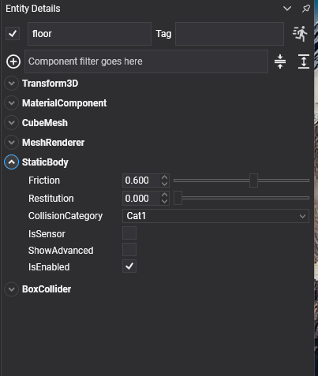

Static Body

StaticBody is the component for everything in a scene that the simulation collides with but never moves: the floor, the walls, the terrain, the level. It is the cheapest kind of body there is. The solver never integrates it, never puts it to sleep or wakes it, and never tests two static bodies against each other, so a level built from a thousand of them costs nothing per step.
StaticBody Component

Add a StaticBody to an entity, then at least one collider:
Entity floor = new Entity("floor")
.AddComponent(new Transform3D() { Position = new Vector3(0f, -0.2f, 0f), Scale = new Vector3(40f, 0.4f, 40f) })
.AddComponent(new MaterialComponent() { Material = material })
.AddComponent(new CubeMesh() { Size = 1f })
.AddComponent(new MeshRenderer())
.AddComponent(new StaticBody() { Friction = 0.6f })
.AddComponent(new BoxCollider());
this.Managers.EntityManager.Add(floor);
The component has no properties of its own. Everything it exposes comes from PhysicsBody and is listed under What Every Body Shares: Friction, Restitution, CollisionCategory, IsSensor, SurfaceVelocity, EnhancedInternalEdgeRemoval, the three collision events, Teleport and InvalidateShape.
What it does not have is anything to do with motion: no mass, no velocity, no damping, no gravity factor, no MoveTo. The solver never reads those for a body it never moves, and the previous API accepted them silently on static bodies, which hid a good number of mistakes.
What a Static Body Is Good For
- Level geometry. Floors, walls, props that never move. This is where the triangle-mesh
MeshCollider, thePlaneColliderand theHeightFieldColliderbelong, since none of them can back a dynamic body. - Fixed trigger volumes. A checkpoint or a damage zone is a
StaticBodywithIsSensorset. See Sensors. - Conveyors.
SurfaceVelocityon a static body carries whatever rests on it without anything in the scene turning. - Anchors. A constraint whose
ConnectedEntityPathpoints at a static body is pinned to the level, which is handier than pinning it to the world when the level is built from prefabs.
Moving a Static Body
Writing to the Transform3D of a static body moves it, and the physics world follows. What it does not do is give the body a velocity, so anything resting on it is left behind and anything in its way is passed through rather than pushed. That is fine for placing scenery at load time, and wrong for anything that moves while the game runs.
Something that has to move by code, even occasionally, is a RigidBody with IsKinematic set, driven with MoveTo. Two cases catch people out:
- A sensor that follows the cursor, a controller or a hand. Jolt never generates contact pairs between two static bodies, so a static sensor swept across a static level reports nothing. Make it a kinematic
RigidBodyand, if it must notice static geometry, setCollideKinematicVsNonDynamic. - Scenery that becomes debris. A wall that can be knocked down is a dynamic
RigidBodyfrom the start, perhaps held in place by a breakableFixedConstraint. There is no switching aStaticBodyinto aRigidBodyat run time: they are different components, and the swap means removing one and adding the other.
Note
Two static bodies never collide with each other, whatever the collision matrix says. If two pieces of level have to report an overlap, one of them is kinematic.